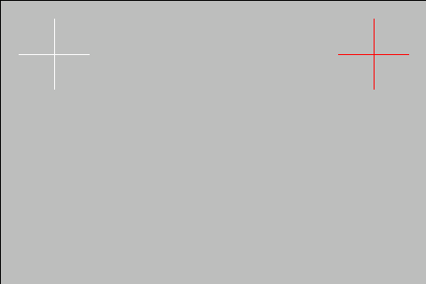

Touchscreen issues
Contents:
Beware that this document focuses on RaspberryOS but most of it should apply to any other Debian based distros
Touch not working
If the screen is connected over USB, the cable may cause issues. For that, please see this guide.
DSI screens touch not working on RaspberryOS / MainsailOS version Debian 11 Bullseye
Some DSI screens have issues where touch doesn't work with the default configuration. The current workaround/temporary fix involves changing the kernel driver module used for these displays.
sudo nano /boot/config.txt and change
to
Close the nano editor using ctrl+x (exit), then y for yes (save).
Reboot to apply changes. sudo reboot
If that doesn't fix it, you can try commenting these lines out, resulting in:
Reboot to apply changes. sudo reboot
Touch rotation and matrix
If the touch works but registers touch input in a different location from the input, then you may need to apply an input transformation matrix.
First you will need your device name. On a terminal, run:
Output:
⎡ Virtual core pointer id=2 [master pointer (3)]
⎜ ↳ Virtual core XTEST pointer id=4 [slave pointer (2)]
⎜ ↳ ADS7846 Touchscreen id=6 [slave pointer (2)]
⎣ Virtual core keyboard id=3 [master keyboard (2)]
↳ Virtual core XTEST keyboard id=5 [slave keyboard (3)]
In this case the device is the ADS7846 Touchscreen, yours may be different
You can test a change by running:
Example
Where the matrix can be one of the following options:
| Rotation | Matrix |
|---|---|
| 0° | 1 0 0 0 1 0 0 0 1 |
| 90° Clockwise | 0 -1 1 1 0 0 0 0 1 |
| 90° Counter-Clockwise | 0 1 0 -1 0 1 0 0 1 |
| 180° (Inverts X and Y) | -1 0 1 0 -1 1 0 0 1 |
| invert Y | -1 0 1 1 1 0 0 0 1 |
| invert X | -1 0 1 0 1 0 0 0 1 |
| expand to twice the size horizontally | 0.5 0 0 0 1 0 0 0 1 |
To make the calibration permanent read Save touch calibration
Touch calibration
This is optional, and you should only do it if you are having problems.
Download and build xtcal:
sudo apt-get install libxaw7-dev libxxf86vm-dev libxft-dev
cd
git clone https://github.com/KurtJacobson/xtcal
cd xtcal
make
cd ..
First you will need your touchscreen device name. On a terminal, run:
Output:
⎡ Virtual core pointer id=2 [master pointer (3)]
⎜ ↳ Virtual core XTEST pointer id=4 [slave pointer (2)]
⎜ ↳ ADS7846 Touchscreen id=6 [slave pointer (2)]
⎣ Virtual core keyboard id=3 [master keyboard (2)]
↳ Virtual core XTEST keyboard id=5 [slave keyboard (3)]
In this case the device is the ADS7846 Touchscreen, yours may be different
Reset the old calibration: (set the 0° rotation matrix: 1 0 0 0 1 0 0 0 1)
DISPLAY=:0 xinput set-prop "ADS7846 Touchscreen" 'Coordinate Transformation Matrix' 1 0 0 0 1 0 0 0 1
ctrl+c and adjust geometry
Important
KlipperScreen or a desktop environment should be on the screen to launch the calibrator
Touch the center of the crosses in order, they should turn white.

Test the calibration
Copy the output of the calibration and test it, For example:
DISPLAY=:0 xinput set-prop "ADS7846 Touchscreen" 'Coordinate Transformation Matrix' -0.016267 -0.952804 0.978336 -1.010164 0.065333 0.998316 0 0 1
Save touch calibration
modify /etc/udev/rules.d/51-touchscreen.rules:
ACTION=="add", ATTRS{name}=="<device name>", ENV{LIBINPUT_CALIBRATION_MATRIX}="<matrix>"
Close the nano editor using ctrl+x (exit), then y for yes (save).
Example
ACTION=="add", ATTRS{name}=="ADS7846 Touchscreen", ENV{LIBINPUT_CALIBRATION_MATRIX}="-1 0 1 0 -1 1 0 0 1"
Close the nano editor using ctrl+x (exit), then y for yes (save).
Alternative Example
As an alternative if the above doesn't work:
determine the touchscreen driver (usually libinput):
if it says evdev instead, then change libinput to evdev below, both in the filename and in the file
Section "InputClass"
Identifier "libinput touchscreen catchall"
MatchIsTouchscreen "on"
MatchDevicePath "/dev/input/event*"
Driver "libinput"
Option "TransformationMatrix" "0 -1 1 1 0 0 0 0 1"
EndSection
Note
the number of the filename determines the order of loading, if you have issues check if there are other files overriding your config or just use 99-touch_calibration.conf as a name.
Close the nano editor using ctrl+x (exit), then y for yes (save).
For more in-depth guidance on using Coordinate Transformation Matrices: